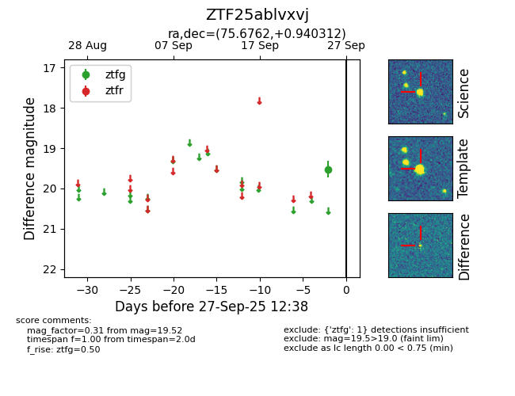

FINK: ZTF25ablvxvj
Lasair: ZTF25ablvxvj
ALeRCE: ZTF25ablvxvj
ZTF25ablvxvj (ztf,fink)
equatorial (ra, dec) = (75.6762,+0.94031)
galactic (l, b) = (198.8635,-23.51834)

last ztfg=19.52
1 ztfg detections